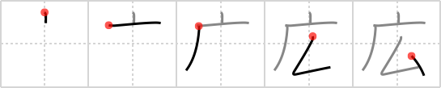

広
← →
wide

Reading:
On-Yomi: コウ — Kun-Yomi: ひろ.い、ひろ.まる、ひろ.める、ひろ.がる、ひろ.げる
Heisig story:
Cave . . . elbow.
Koohii stories:
1) [daredawg3583] 22-1-2007(217): The Batcave is very wide and has a lot of elbow room for Batman to do his yoga.
2) [raulir] 28-4-2006(107): A wide cave has a lot of "elbow room".
3) [fuaburisu] 16-1-2006(34): A caveman widens his cave by pounding on the interior with his strong elbows.
4) [sleepyday] 30-9-2008(20): This character depicts that of someone standing at the entrance of a cave. He's standing there with his hands on his hips, and his elbows pointing out to each side. He's telling you that the cave is wide enough to walk through comfortably. Try playing with the form of the Kanji to draw out the pictograph I described. :).
5) [Koos83] 1-11-2009(10): The CAVE wasn't very wide. Both my ELBOWS touched the sides.